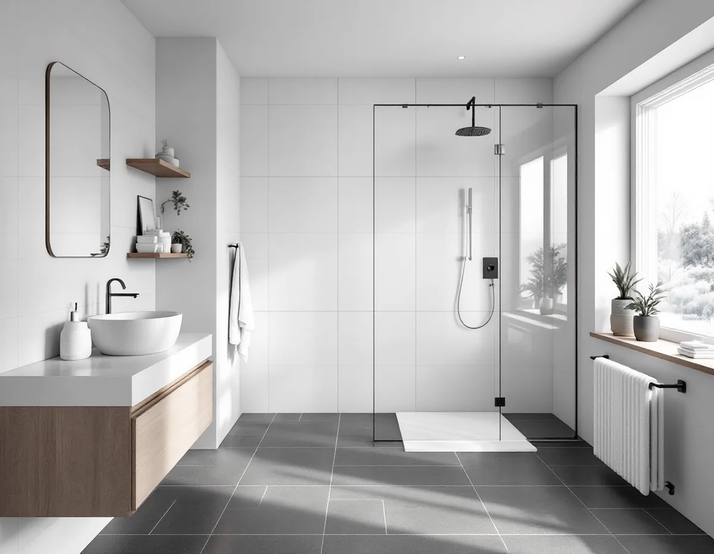
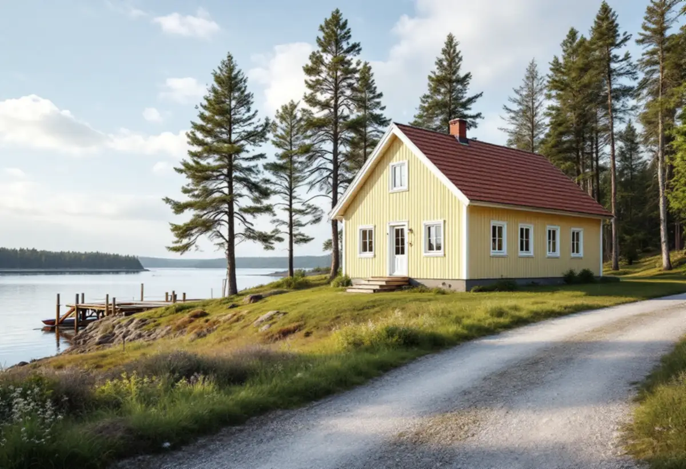

Besök
Vi ser badrummet och tar reda på om huset har kommunalt VA, eget avlopp eller väntar på anslutning.
I Österåker blir fritidshus helårsbostäder samtidigt som kommunen bygger ut vatten och avlopp i etapper, och badrummet hamnar ofta mitt i den förändringen. Geal Entreprenad AB river, bygger tätskikt och ytskikt och samordnar VVS och el, och vi börjar med att ta reda på om huset har kommunalt VA, eget avlopp eller är på väg att anslutas.

Den 10 mars 2025 antog kommunfullmäktige Österåkers första vattentjänstplan. Den ska läsas som ett komplement till VA-planen och är inte juridiskt bindande, utan ett vägledande verktyg. Planen räknar upp kommunens utmaningar: stark befolkningstillväxt, högt bebyggelsetryck, förekomst av tungmetaller, permanentning av fritidshus, stor säsongsvariation i befolkningen och att en stor del av kommunen är skärgård.
Utbyggnaden koncentreras de närmaste åren till de västra delarna, med programområdena Åkers Runö och Täljö–Gottsunda och utvecklingen av Åkersberga centrum. Området kring Täljö, Alsro och Gottsunda omfattar både nybyggnadsområden och förnyelseområden. I Östanå ska ett nytt reningsverk med större kapacitet än det i Roslags-Kulla göra fortsatt utbyggnad möjlig, till exempel inom detaljplanen för Wira utby.
På sydvästra Ljusterö är delar av Linanäs–Laggarsvik anslutna till allmänt vatten och spillvatten, men stora delar har enskilda anläggningar och en blandning av permanentbostäder och fritidshus. Där har tidplanen för VA-utbyggnaden förskjutits och beskrivs som osäker. För badrummet betyder det att samma fråga får olika svar i olika delar av kommunen: bygga för det avlopp som finns nu, eller för det som kommer.

En fastighet med indraget vatten ska ha en fungerande och godkänd avloppsanläggning, skriver kommunen på sidan om avlopp, oavsett om det är permanentboende eller fritidsboende. Ska ett nytt avlopp anläggas eller ett befintligt ändras krävs anmälan eller tillstånd från Miljö- och hälsoskyddsnämnden. Anslutning av en ny byggnad är ett exempel på anmälan, och den anmälan som ska göras enligt plan- och bygglagen ingår i samma blankett.
För att slamtömningen ska fungera får avståndet till farbar väg, eller till båtens angörningsplats, vara högst tio meter. Annars behöver fastighetsägaren anlägga en sugledning. Högre krav på rening gäller i tätbebyggda områden med många brunnar, nära utpekade sjöar, inom 100 meter från stränder och i skyddade naturområden. Berörda grannar ska få möjlighet att yttra sig innan ansökan skickas in.
Kommunen påpekar också att den kan lämna bygglov först när det är klarlagt hur vatten och avlopp kan ordnas. Ska huset byggas till för att få plats med ett nytt badrum är avloppet alltså en del av lovfrågan.
Delar av Österåker får sitt dricksvatten från Mälaren via Norrvatten och Roslagsvatten, men kommunen påpekar på sidan om vatten och avlopp att vattenverket har begränsad kapacitet, och att den som har egen brunn kan få problem när grundvattennivåerna sjunker. Var och en av oss använder i snitt 140 liter vatten om dagen, och bara cirka tio liter av dem går till mat och dryck. Resten går till dusch, toalett, tvätt och disk.
Kommunens råd blir därför konkreta för den som bygger badrum. Med ett snålspolande duschmunstycke kan vattenmängden halveras, ett badkar rymmer 200 liter och en droppande kran kan förbruka cirka 1 500 liter vatten per år. Har du en brunn kan en dusch med vattensnålt munstycke vara ett bättre val än ett badkar.
Pool och badtunna är ett eget kapitel. Det är inte tillåtet att fylla dem med grundvatten från egen borrad brunn eller en gemensam brunn, eftersom så stora uttag riskerar sinande brunnar eller högre salthalter. Kommunalt vatten, till exempel via tankbil, går däremot bra.
Den som har egen brunn ansvarar själv för att kontrollera vattenkvaliteten. Kommunen hänvisar till Livsmedelsverkets rekommendation om prov minst vart tredje år och skriver att en normal analys passar för de flesta brunnar, med radon som tillägg för en borrad brunn. Provkit kan hämtas i Åkersberga och på Ljusterö, och svaret kommer normalt inom 14 dagar.
Om resultatet visar problem påpekar kommunen att det vid mikrobiologiska problem ibland är bättre att åtgärda orsaken än att installera ett filter, till exempel otätheter som släpper in ytvatten i brunnen. Vatten med PFAS över riktvärdet går enligt kommunen bra att använda för dusch och tvätt.
Om taken på husen i kommunen finns mer under takläggare i Österåker.
Vi ser badrummet och tar reda på om huset har kommunalt VA, eget avlopp eller väntar på anslutning.
Vi går igenom avloppets tillstånd, avståndet för slamtömning och eventuella brunnsprov.
Du får ett skriftligt förslag där rivning, installationer och ytskikt står var för sig.
Ska en ny byggnad kopplas på eller avloppet ändras lämnas underlag in innan arbetet börjar.
Golvbrunn, fall, tätskikt och vattensnåla armaturer; installatörerna drar rör och el.
Vi går igenom rummet med dig och lämnar egenkontroll och skötselråd.
Avdraget är 30 procent av arbetskostnaden, högst 50 000 kr per person och år och högst 75 000 kr tillsammans med rutavdrag. Material och resor räknas inte.
För ett småhus räknar Skatteverket att göra förbättringsarbeten i våtrum, till exempel byta plastmatta eller våtrumstapet mot kakel, och att dra in vatten- och avloppsledningar som rotarbete. Ett fritidshus räknas som småhus om du använder det som bostad. Geal drar avdraget direkt på fakturan.
Om huset har kommunalt VA, eget avlopp eller ska anslutas, hur ledningarna dras, om fastigheten ligger på en ö och vilka ytskikt och armaturer du väljer. Besöket är gratis, och du får ett skriftligt kostnadsförslag.
Tätskikt, golvbrunn, el, VVS och intyg.
Badrumsrenovering i Stockholm →Takbyte, takbesiktning och plåtarbeten.
Takläggare i Österåker →Svinninge, sommarvillor och sportstugor.
Takrenovering i Österåker →Uthyrning, kulturmiljö och fornlämningar.
Attefallshus i Österåker →Rivning, markarbete och gatukostnader.
Byggföretag i Österåker →Skärgårdshus, fritidshus och villor i Österåker.
Fasadrenovering i Österåker →Varsamhet, kulturvärden och kustlägen i Österåker.
Fönsterbyte i Österåker →Jämna golv och färre trösklar.
Golvläggare i Österåker →Sommarvillor, röda stugor och efterkrigsvillor.
Målare i Österåker →Bryggor, altaner och äldre snickerier.
Snickare i Österåker →Grannmedgivande, strandskydd och utstakning.
Tillbyggnad i Österåker →